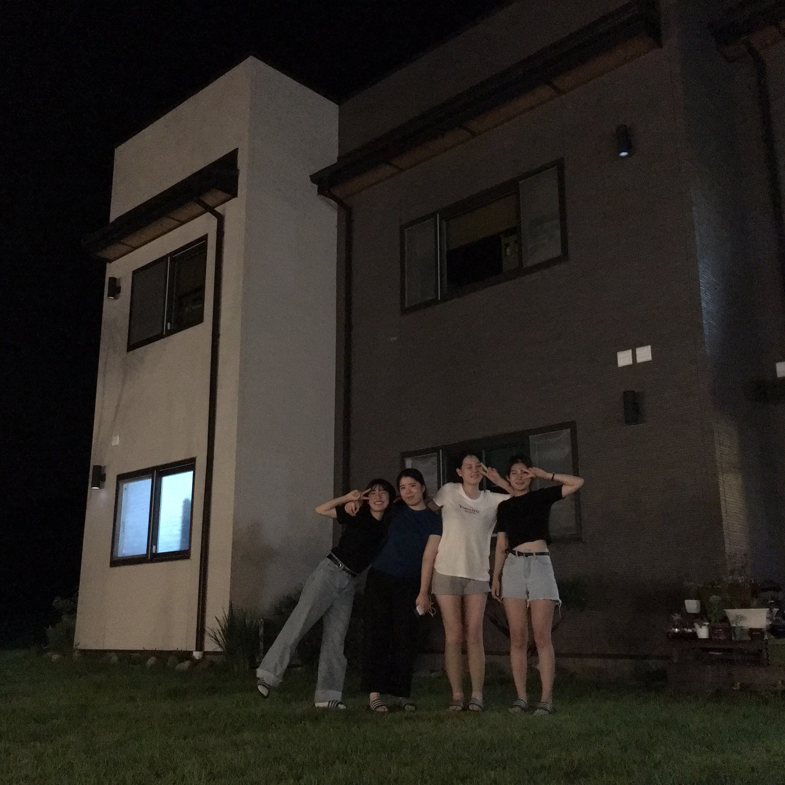

본 페이지는 혜주의 귀여운 친구들을 소개하기 위한 페이지입니다. 내용 중 간혹 부정확한 정보가 포함되어 있을 수 있으며, 다소 귀여움에 유의하십시오.
혜주를 포함한 채영, 은빈, 유미는 상우고등학교(2013~2015)에서 연고도 없이 처음만나 현재(2021)까지 만남을 이어나가고 있다. 어쩌다 이렇게 넷이 놀게 되었는지 그 시점이나 동기는 불분명하나 '혜주의 귀여움에 자석처럼 이끌린 것 '이라는 가설이 지금으로써 가장 유력한 가설로 추정중이다.